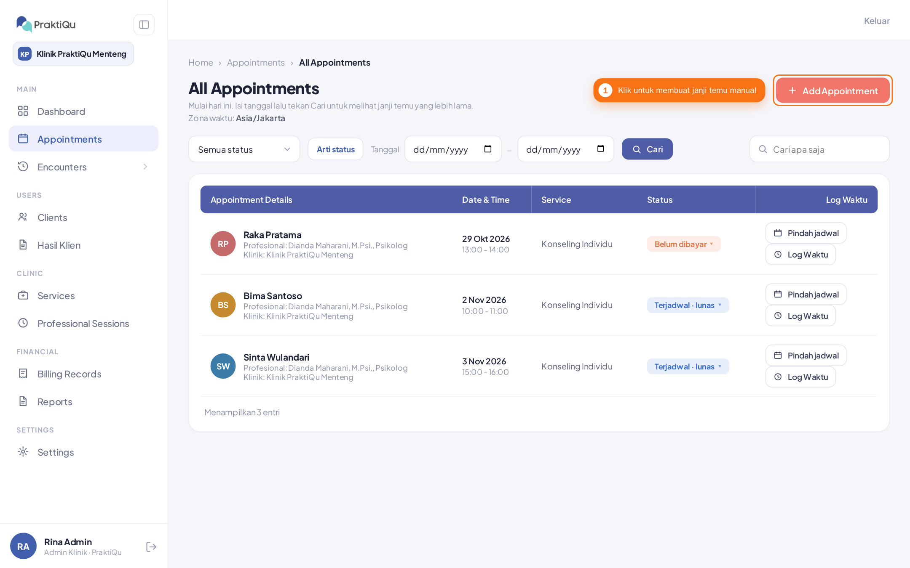
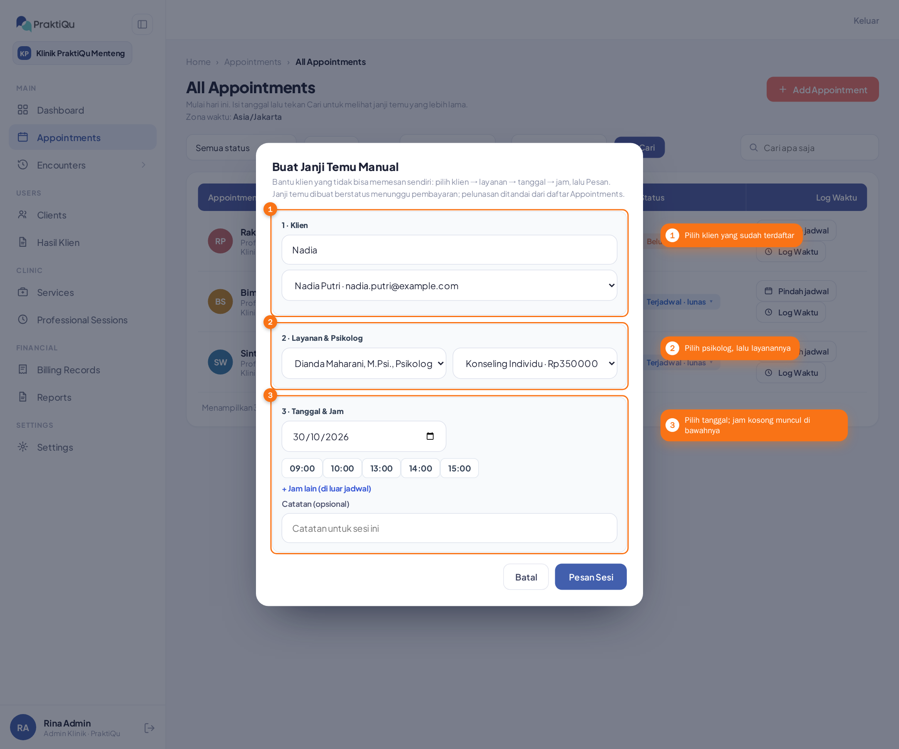
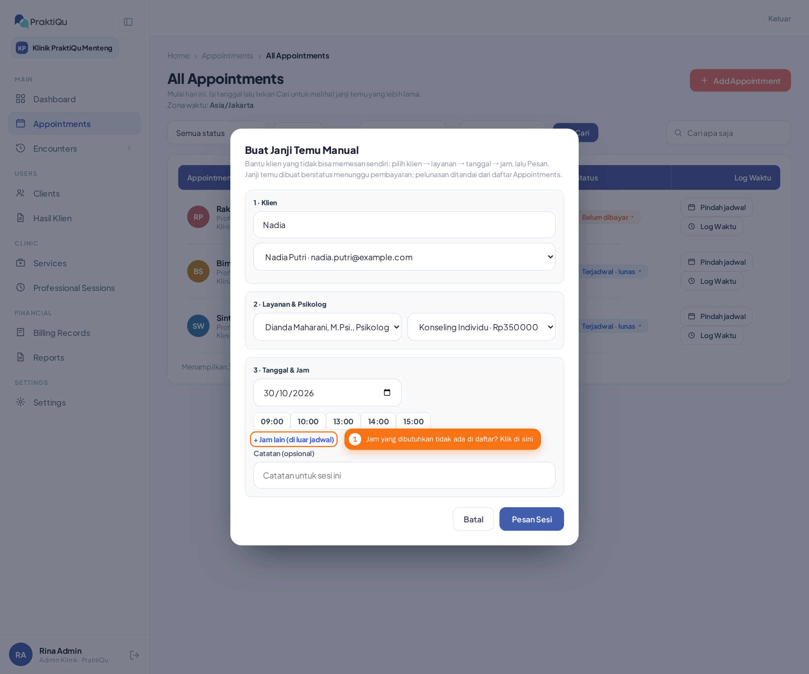
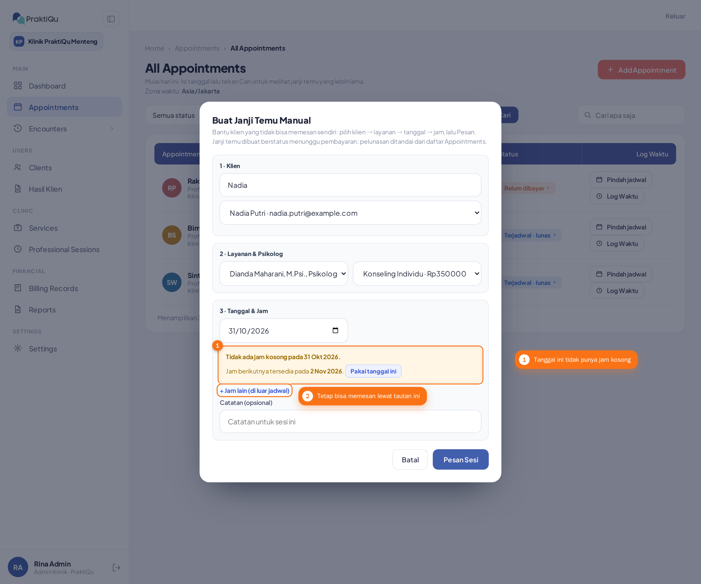
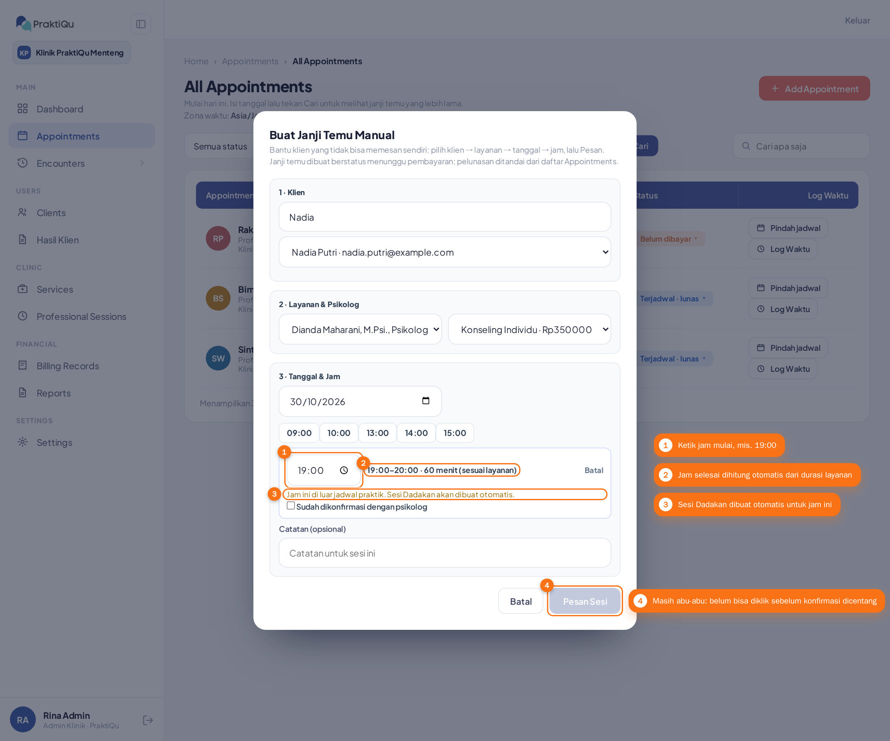
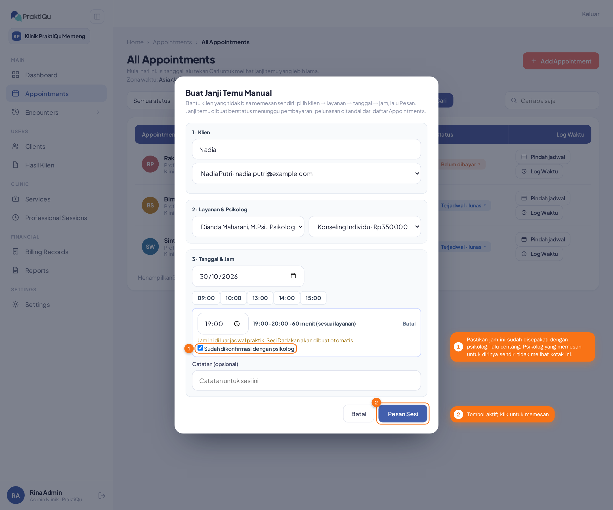
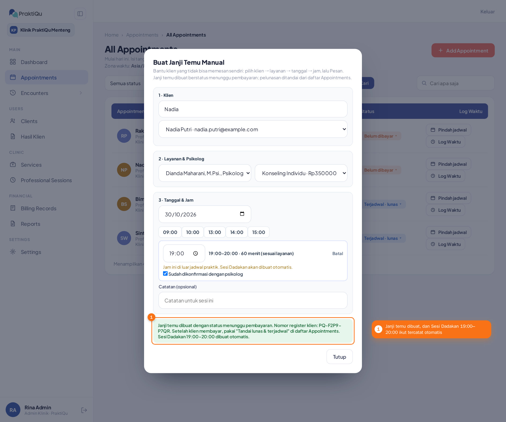
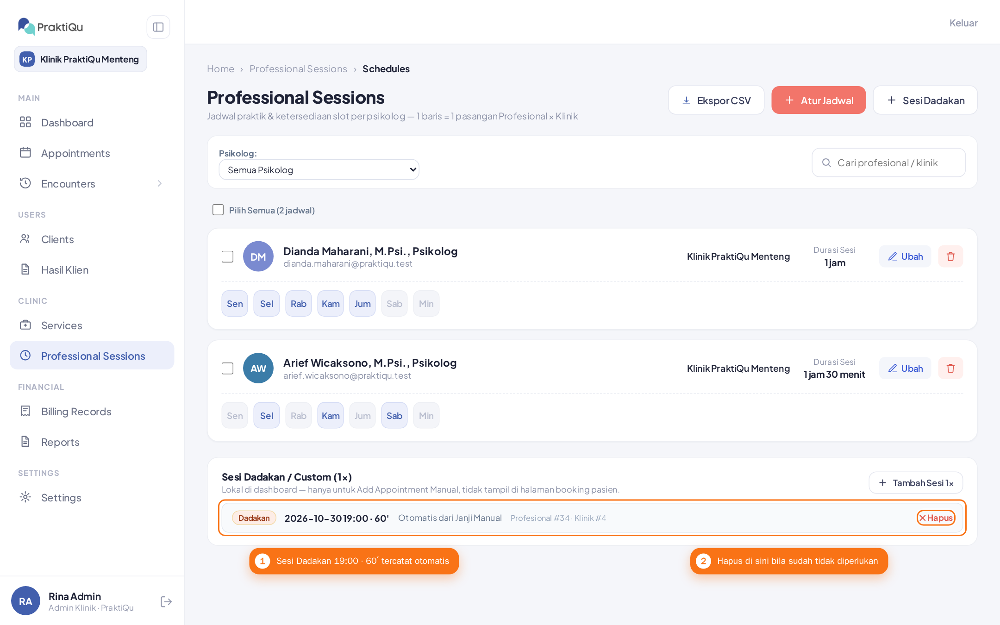
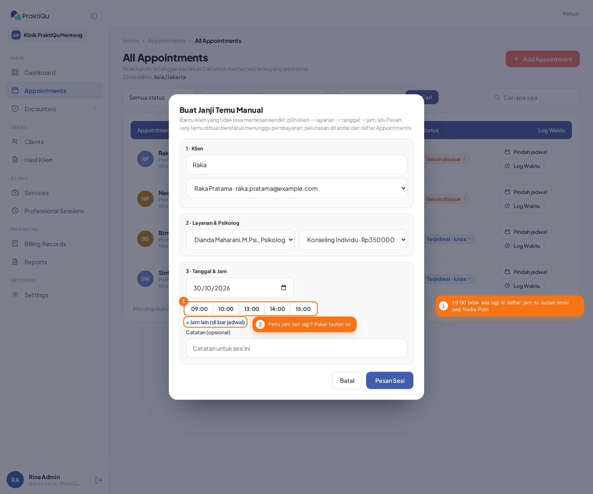

Janji Temu di Luar Jadwal
Cara membuat Janji Manual untuk jam di luar jam praktik psikolog, cukup dalam satu langkah. Sistem otomatis mencatat Sesi Dadakan untuk jam itu, jadi Anda tidak perlu membuatnya lebih dulu.
Admin klinik dan resepsionis untuk psikolog di kliniknya, dengan mencentang konfirmasi dari psikolog. Psikolog untuk dirinya sendiri, tanpa centang. Super admin juga bisa, dengan centang yang sama.
Saat klien butuh jam yang tidak ada di daftar, misalnya malam hari atau hari libur, dan psikolog sudah menyetujuinya.
Sebuah Sesi Dadakan selama durasi layanan, di klinik tempat janji temu itu dibuat.
Langkah-langkah
Klik "Add Appointment"
Di menu Appointments, klik tombol Add Appointment di kanan atas. Jendela Buat Janji Temu Manual terbuka.

Pilih klien, psikolog, layanan, dan tanggal
Isi seperti Janji Manual biasa: cari dan pilih klien, pilih psikolog lalu layanannya, kemudian pilih tanggal. Daftar jam yang masih kosong muncul di bawah tanggal.

Klik "+ Jam lain (di luar jadwal)"
Kalau jam yang dibutuhkan klien tidak ada di daftar, klik tautan + Jam lain (di luar jadwal) di bawah daftar jam. Tautan ini juga muncul saat tanggalnya tidak punya jam kosong sama sekali.

Pada tanggal tanpa jam kosong, kotak kuning "Tidak ada jam kosong" menawarkan tanggal terdekat yang masih punya jam. Tautan yang sama tetap ada tepat di bawahnya.

Ketik jam mulai
Ketik jam mulai (kelipatan 5 menit, misalnya 19:00). Jam selesai dihitung dari durasi layanan, dan catatan di bawahnya mengingatkan bahwa Sesi Dadakan akan dibuat otomatis. Tombol Pesan Sesi tetap abu-abu dan belum bisa diklik sampai konfirmasi dicentang.

Centang konfirmasi psikolog
Pastikan psikolognya sudah setuju dengan jam itu, lalu centang Sudah dikonfirmasi dengan psikolog. Psikolog yang memesan untuk dirinya sendiri tidak melihat kotak ini. Setelah dicentang, klik Pesan Sesi.

Selesai
Pesan hijau menyebutkan nomor register klien dan diakhiri dengan "Sesi Dadakan 19:00–20:00 dibuat otomatis." Janji temunya sudah masuk daftar Appointments dengan status Belum dibayar.

Periksa di daftar Sesi Dadakan
Buka Professional Sessions. Di bagian Sesi Dadakan / Custom (1×) sudah ada barisnya, lengkap dengan tanggal, jam mulai, durasi, dan catatan "Otomatis dari Janji Manual".

Jam itu tidak ditawarkan lagi
Kalau Anda membuka Janji Manual lagi untuk psikolog, layanan, dan tanggal yang sama, 19:00 tidak ada lagi di daftar karena sudah terisi. Jam baru yang lain tetap bisa dipesan lewat tautan yang sama.

Yang terjadi otomatis
- Sesi Dadakan muncul di daftar Sesi Dadakan (Professional Sessions), seukuran durasi layanan dan di klinik janji temunya.
- Janji temunya dibuat seperti Janji Manual biasa: status menunggu pembayaran dan nomor register klien. Setelah klien membayar, staf memakai "Tandai lunas & terjadwal" di daftar Appointments.
- Kalau pemesanan gagal, Sesi Dadakannya ikut dibatalkan, jadi tidak ada jam yatim yang tertinggal.
- Jam yang sudah dipesan tidak ditawarkan lagi di daftar jam Janji Manual.
Kalau muncul pesan ini
| Pesan | Artinya dan yang perlu dilakukan |
|---|---|
| Centang konfirmasi bahwa jam ini sudah disepakati dengan psikolog. | Kotak Sudah dikonfirmasi dengan psikolog belum dicentang. Hubungi psikolog dulu, lalu centang. |
| Jam sudah lewat. Pilih jam lain. | Jam yang diketik sudah terlewat (untuk hari ini). Pilih jam yang akan datang. |
| Sesi melewati tengah malam. Pilih jam lebih awal. | Jam mulai ditambah durasi layanan lebih dari pukul 24:00. Pilih jam mulai yang lebih awal. |
| Jam mulai harus berformat JJ:MM dengan kelipatan 5 menit. | Tulis jam seperti 19:00 atau 19:05, bukan 19:07. |
| Bentrok dengan Sesi Dadakan lain pada jam yang sama. | Sesi Dadakan lain milik psikolog itu tumpang tindih sebagian dengan jam ini. Pilih jam lain, atau ubah atau hapus Sesi Dadakan itu di menu Sesi Dadakan. |
| Layanan ini tidak dibuka psikolog tersebut. | Psikolog itu tidak membuka layanan yang dipilih. Pilih layanan lain. |
| Durasi layanan gagal dimuat. Coba lagi. | Sambungan ke sistem terganggu sehingga durasi layanan tidak terbaca. Tunggu sebentar lalu klik Pesan Sesi lagi. |
| Jam ini baru saja terisi atau hold kedaluwarsa. Pilih jam lain. | Jam itu bentrok dengan janji temu lain milik psikolog yang sama, bisa juga di klinik lain. Pilih jam lain. |
| Psikolog ini tidak terdaftar di klinik Anda. | Admin klinik dan resepsionis hanya bisa memesan untuk psikolog di kliniknya sendiri. |
Perlu diketahui
- Kalau jam yang Anda ketik ternyata sudah ada di daftar jam, sistem hanya memilih jam itu. Tidak ada Sesi Dadakan yang dibuat.
- Sesi Dadakan tetap ada walaupun janji temunya kemudian dibatalkan. Hapus lewat menu Sesi Dadakan bila tidak diperlukan.
- Pasien tidak pernah melihat Sesi Dadakan di halaman pemesanan publik.
- Aturan batas pemesanan klinik (minimal berapa hari sebelumnya) tetap berlaku.